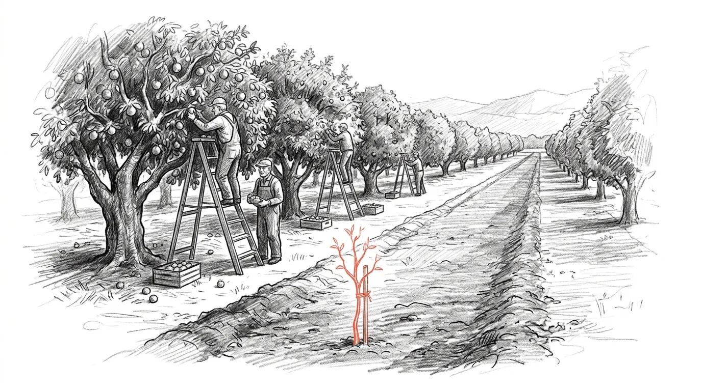

Wer bildet noch aus
«Brauchen wir mit KI überhaupt noch so viele Junioren?» Die Frage fällt gern in derselben Sitzung, in der man den Fachkräftemangel beklagt, und beantwortet wird sie als Effizienzfrage: Was ein Junior bisher in einem Tag erledigte, liefert KI in Minuten. Dabei wirft sie zwei Zeiten zusammen, die bisher immer gemeinsam vergingen:
- die Zeit bis zum Output
- die Zeit bis zur Urteilsfähigkeit
Output heisst, der Junior liefert etwas, das man verwenden kann. Urteilsfähigkeit heisst, er kann sagen, ob ein Text, ein Plan oder ein Vertrag stimmt, den er nicht selbst geschrieben hat. KI verkürzt vor allem die erste Zeit.
Im technischen Kundendienst eines grossen US-Softwarekonzerns waren neue Mitarbeiter mit KI-Assistenz nach zwei Monaten so gut wie Kollegen ohne Assistenz nach über sechs, wie eine Studie über 5’000 Kundendienst-Mitarbeiter zeigt. Dass es bei der Urteilsfähigkeit genauso schnell geht, glaube ich nicht. Sie entsteht an Fehlern, die jemand bemerkt und mit dem Junior auflöst, und genau diese Fehler nimmt ihm das Modell ab. Die Mitarbeiter in der Studie lernten zwar dazu und blieben besser, auch wenn die KI ausfiel. Nur hat eine Kundenanfrage meist eine richtige Antwort, ein Mediaplan oder ein Vertragsentwurf selten.
Bisher musste niemand die beiden Zeiten auseinanderhalten, weil die kurze Zeit bis zum Output die lange bis zur Urteilsfähigkeit finanzierte. Der Junior war vom ersten Monat an verrechenbar, und mit seiner Arbeit bezahlte der Kunde meist unwissentlich auch die Jahre, in denen der Junior Urteilsfähigkeit aufbaute. Die Kanzlei verrechnete die Recherchestunde des Associates zum Mandantensatz, die Agentur den ersten Textentwurf des Juniors, die Beratung die Slides des Analysten. Gelernt wurde nebenbei, an bezahlten Aufträgen und unter den Augen eines Seniors, der die Fehler fand.
Ethan Mollick, der an der Wharton School zu KI und Arbeit forscht, beschreibt das im New York Times Magazine als Tausch: Der Junior macht die ungeliebte Arbeit, lernt dabei und wird bewertet, «and everyone gets paid». Das habe 4000 Jahre lang funktioniert, für ein Geschäftsmodell keine schlechte Laufzeit, und nun sei es zusammengebrochen.
Generative KI entzieht dem Aufbau von Erfahrung die Finanzierung. Liefert das Modell die Recherche in zwei Minuten, will kaum ein Mandant noch für die Junior-Stunde zahlen, und die Zeit bis zur Urteilsfähigkeit steht als nackte Kostenstelle da. Wer jetzt auf Junioren verzichtet, handelt betriebswirtschaftlich folgerichtig. Wenn alle so rechnen, fehlen in einigen Jahren die Seniors.
In den USA stellen Firmen schon weniger Junioren ein
Erik Brynjolfsson und zwei Kollegen aus Stanford werten die Lohndaten von Millionen US-Beschäftigten aus. In den Berufen, die KI am stärksten ausgesetzt sind, liegt die Beschäftigung der 22- bis 25-Jährigen 19 Prozent tiefer, als wenn sie sich wie in wenig exponierten Berufen entwickelt hätte. Bei den Erfahrenen gibt es diese Lücke nicht. Bei den Jungen entsteht sie, weil Firmen weniger von ihnen einstellen, nicht weil sie mehr entlassen.
Harvard-Ökonomen finden dasselbe Muster in 62 Millionen Lebensläufen: Firmen, die generative KI einführen, beschäftigen danach weniger Junioren als vergleichbare Firmen, bei den Seniors ändert sich am Trend nichts. Die Autoren lassen offen, ob die Arbeit schon heute ersetzt ist oder die Firmen vorauseilend Stellen nicht besetzen, die sie bald automatisiert glauben. Für den Nachwuchs macht das keinen Unterschied.
Urteilsfähigkeit wird wertvoller
Bezahlt wird die Urteilsfähigkeit später, wenn ein Kunde nicht mehr den Text braucht, sondern jemanden, der sagt, ob er stimmt. Mit KI wird das wichtiger, denn mehr Output heisst nicht mehr Wert. In einem Experiment mit 758 BCG-Beratern scheiterte das Modell an einer der Aufgaben, und dort lagen die Berater mit KI seltener richtig als ohne. Ihre Antworten wirkten trotzdem überzeugender, auch die falschen, ein Effekt, den man aus Agenturpräsentationen auch ohne KI kennt. Mollick sorgt sich in der New York Times darum: Ohne Praxiserfahrung könne man fremde Arbeit nicht beurteilen, gleich ob sie von Menschen oder von einer KI stammt, und das brauche, wer KI-Agenten führt.
Dazu fallen Kosten und Nutzen auseinander. Die Ausbildung kostet im laufenden Quartal, der fertige Senior nützt Jahre später, womöglich der Konkurrenz. Der Markt für erfahrene Leute funktioniert damit wie eine Allmende, auch wenn er in der Personalabteilung Arbeitsmarkt heisst: Jede Firma bedient sich, und auffüllen muss keine, solange es die anderen tun.

Die Schweiz hat dafür einen Vertrag, vorerst
In der Schweiz liegt die Zahl der Lehrverträge 2026 im Rahmen der Vorjahre, und die kaufmännische Lehre steht bei den Jugendlichen weiterhin an erster Stelle. Das duale System giesst Lernen und bezahlte Arbeit in einen Vertrag, mit Bildungsplan und Abschlussprüfung, und in den meisten Lehrverhältnissen rechnet sich das für den Betrieb.
In der kaufmännischen Lehre entsteht der Überschuss für den Betrieb allerdings fast ganz im dritten Lehrjahr, wenn die Lernenden zwei Drittel ihrer Zeit im Betrieb mit Aufgaben einer Fachkraft verbringen. Übernimmt das Modell einen Teil dieser Aufgaben, schrumpft der Beitrag, der die Lehre finanziert. Schrumpft er stark genug, lohnt sich Ausbilden nur noch, wenn die Ausgebildeten bleiben, und die Allmende erreicht auch die Schweiz. Ich lese die stabilen Zahlen deshalb als Aufschub.
Zudem schützt die Lehre nur den Anfang. Wer nach dem Studium in eine Kanzlei, Agentur oder Beratung einsteigt, hat keinen Lehrvertrag, und auch hierzulande finanziert kaum jemand ausdrücklich seinen Weg zum Senior, der für fremde Arbeit geradesteht.
Wer bei Ihnen die Urteilsfähigkeit bezahlt
Für eine Geschäftsleitung wird die Zeit bis zur Urteilsfähigkeit damit zur Investition, die sie bewusst tätigt oder unterlässt. Beides lässt sich vertreten. Wer verzichtet, kauft seine Seniors in einigen Jahren am Markt, zu dem Preis, den dann alle zahlen, die ebenfalls nicht ausgebildet haben. Teuer wird es auch für jene, die nie entschieden haben, weil der Quartalsabschluss es für sie tat.
Wer ausbildet, spart sich später Rekrutierung und Einarbeitung, und das wird umso mehr wert, je knapper erfahrene Leute werden. Die Rechnung geht allerdings nur auf, wenn die Leute bleiben. Wer in ihre Ausbildung investiert und nicht in die Gründe, zu bleiben, führt eine vorzügliche Nachwuchsschule für die Konkurrenz.
Und wer ausbildet, muss Junioren Arbeit selbst machen lassen, die das Modell schneller könnte, damit sie daran scheitern und jemand die Fehler mit ihnen auflöst. In der Lehre regelt das der Bildungsplan. In der Kanzlei, der Agentur oder der Beratung muss es jemand entscheiden und vertreten, auch gegenüber dem Kunden, der die langsamere Stunde bezahlen soll.
Wer legt bei Ihnen fest, welche Arbeit ein Junior noch selbst macht, obwohl das Modell sie schneller kann?